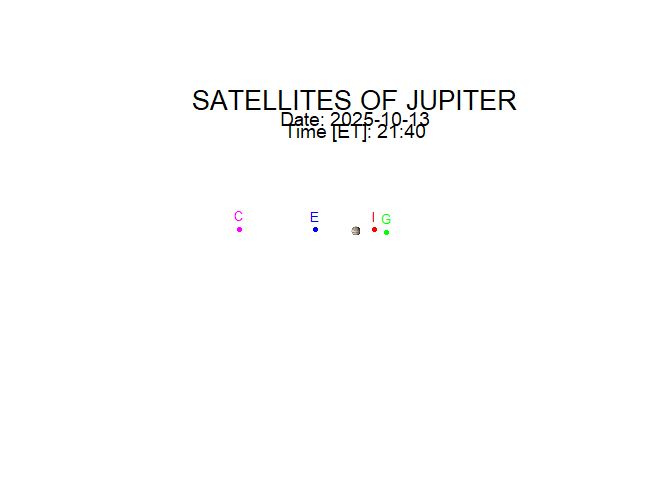

If you are looking at Jupiter through binoculars or a telescope and don’t know which moon is which, then use this package.
galisats is used to determine the positions of the four greatest satellites of Jupiter (called Galilean satellites). Positions are shown on the plot for any given time (ET – Ephemeris Time) with respect to the planet, as seen from the Earth.
The galsat() function calculates numerical values of the satellites’ positions:
x – the apparent rectangular coordinate of the satellite with respect to the center of Jupiter’s disk in the equatorial plane in the units of Jupiter’s equatorial radius; X is positive toward the west
y – the apparent rectangular coordinate of the satellite with respect to the center of Jupiter’s disk from the equatorial plane in the units of Jupiter’s equatorial radius; Y is positive toward the north
The function is based on algorithms in the book:
Astronomical Formulae for Calculators (4th edition), Jean Meeus, Willmann-Bell Inc., 1988
Installation
You can install the development version of galisats from [GitHub] (https://github.com/) with:
# install.packages("devtools")
devtools::install_github("LechJaszowski/galilean_satellites")Example
This is an example of using the function galsat():
library(galisats)
galsat(2025, 10, 13, 21, 40)
#> [1] "SATELLITES OF JUPITER"
#> [1] "Positions of the Galilean satellites."
#> Date: 13 - 10 - 2025
#> Time [ET]: 21 : 40
#> [1] "x: West(+), East(-)"
#> Io 4.1
#> Europa -8.413
#> Ganymede 6.636
#> Callisto -24.733
#> [1] "y: North(+), South(-)"
#> Io 0.112
#> Europa 0.108
#> Ganymede -0.352
#> Callisto 0.254